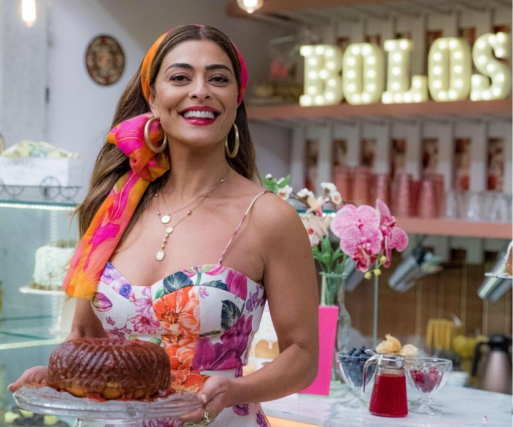

Cadastrar Novo Bolo
Como tudo começou...
À base de muito trabalho, dedicação e de não se deixar abater pelas dificuldades, Maria da Paz apostou no seu negócio.
Ela tem origem pobre, trabalhou como cortadora de cana e empregada doméstica. A oportunidade surgiu quando a funcionária da patroa, que vendia bolos, teve problemas de saúde. Maria da Paz assumiu a função de preparar os bolos e, adivinha... assumiu o negócio.
